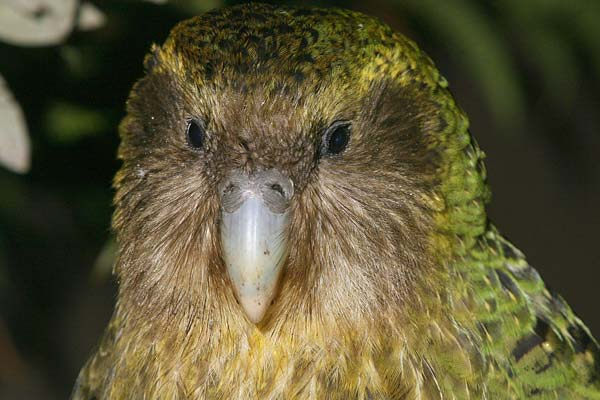
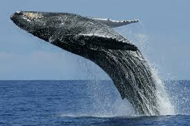
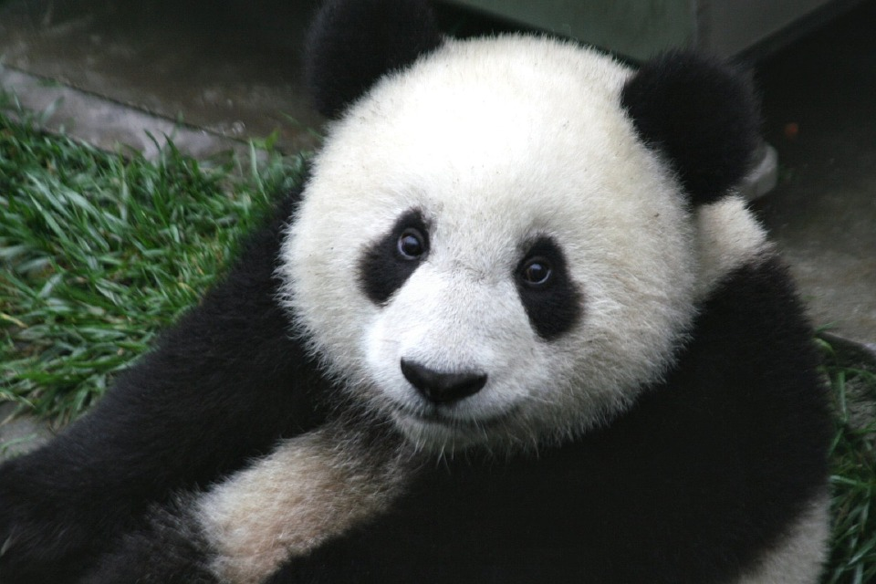
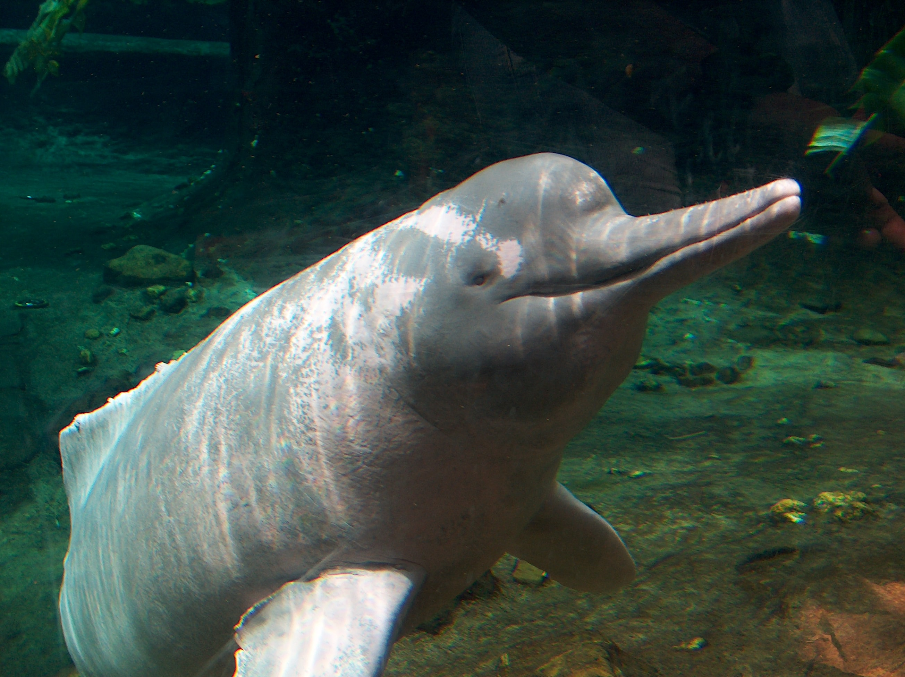

| Image |
Name |
Location |
Class |
About |
Population |
Conservation |
References |
|  |
Kakapo |
Maud Island |
Aves |
The kakapo is critically endangered; as of December 2016, the total known adult population was 149[4] living individuals, as reported by the Kakapo Recovery programme, most of which have been given names.[5] Because of Polynesian and European colonisation and the introduction of predators such as cats, rats, ferrets, and stoats, the kakapo was almost wiped out. Conservation efforts began in the 1890s, but they were not very successful until the implementation of the Kakapo Recovery plan in the 1980s. As of April 2012, surviving kakapo are kept on three predator-free islands, Codfish (Whenua Hou), Anchor, and Little Barrier islands, where they are closely monitored.[6][7] Two large Fiordland islands, Resolution and Secretary, have been the subject of large-scale ecological restoration activities to create self-sustaining ecosystems with suitable habitats for the kakapo. |
149 as of Dec 2016 |
Critically Endangered |
Wikipedia Kakapo |
|  |
Blue Whale |
Ocean |
Mammalia |
Blue whales were abundant in nearly all the oceans on Earth until the beginning of the twentieth century. For over a century, they were hunted almost to extinction by whalers until protected by the international community in 1966. A 2002 report estimated there were 5,000 to 12,000 blue whales worldwide,[4] in at least five groups. The IUCN estimates that there are probably between 10,000 and 25,000 blue whales worldwide today.[9] Before whaling, the largest population was in the Antarctic, numbering approximately 239,000 (range 202,000 to 311,000).[10] There remain only much smaller (around 2,000) concentrations in each of the eastern North Pacific, Antarctic, and Indian Ocean groups. There are two more groups in the North Atlantic, and at least two in the Southern Hemisphere. As of 2014, the Eastern North Pacific blue whale population had rebounded to nearly its pre-hunting population.[11] |
10,000–25,000 as of Jun 2016 |
Endangered |
Wikipedia Blue Whale |
|  |
Giant Panda |
China |
Carnivora |
The giant panda is a conservation reliant vulnerable species.[10][11] A 2007 report showed 239 pandas living in captivity inside China and another 27 outside the country.[12] As of December 2014, 49 giant pandas lived in captivity outside China, living in 18 zoos in 13 different countries.[13] Wild population estimates vary; one estimate shows that there are about 1,590 individuals living in the wild,[12] while a 2006 study via DNA analysis estimated that this figure could be as high as 2,000 to 3,000.[14] Some reports also show that the number of giant pandas in the wild is on the rise.[15] In March 2015, Mongabay stated that the wild giant panda population had increased by 268, or 16.8%, to 1,864.[16] In 2016, the IUCN reclassified the species from "endangered" to "vulnerable".[11] |
1,864 as of Sep 2016 |
Vulnerable |
Wikipedia Giant Panda |
 |
Snow Leopard |
Siberia, Russia, Kazakhstan, Kyrgyzstan, Tajikistan, Uzbekistan, Afghanistan, Pakistan, Himalayas, Mongolia, and Tibet. |
Carnivora |
The snow leopard or ounce (Panthera uncia) is a large cat native to the mountain ranges of Central and South Asia. It is listed as Vulnerable on the IUCN Red List of Threatened Species because the global population is estimated to number less than 10,000 mature individuals and decline about 10% in the next 23 years. As of 2016, the global population was estimated at 4,500 to 8,745 mature individuals.[1][3] |
4,678 to 8,745 as of 2016 |
Vulnerable |
Wikipedia Snow Leopard |
|  |
Boto Cor-de-rosa |
Amazon |
Mammalia |
The Amazon river dolphin is the largest species of river dolphin, with adult males reaching 185 kilograms (408 lb) in weight, and 2.5 metres (8.2 ft) in length. Adults acquire a pink color, more prominent in males, giving it its nickname "pink river dolphin". Sexual dimorphism is very evident, with males measuring 16% longer and weighing 55% more than females. Like other toothed whales, they have a melon, an organ that is used for bio sonar. The dorsal fin, although short in height, is regarded as long, and the pectoral fins are also large. The fin size, unfused vertebrae, and its relative size allow for improved manoeuvrability when navigating flooded forests and capturing prey. |
Fairly distributed - not enough data |
Data Deficient |
Wikipedia Boto |